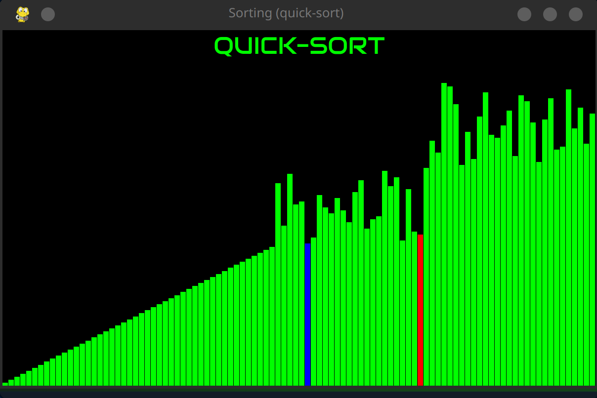
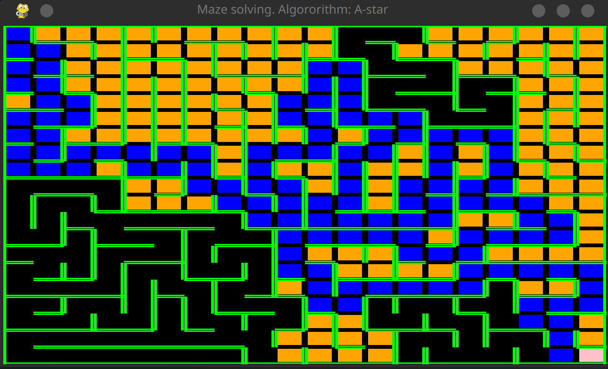

Tom Roth
A portfolio website
Coding Projects
-
Sorting Algorithm Visualisation

This is some code to sort unordered lists of integers with various sorting algorythms such as selection-sort, bubble-sort, merge-sort and quick-sort and keeping track of the time they take to sort.
-
Maze solving algorithm Visualisation

This project consists of three main files. One for creating a maze, one for solving it nad keeping track of the path and all visited cells and one for visualising the results. The path is blue - and its the optimal path because the algorithm used in this example is A-star - all other visited cells are colored yellow.
- This portfolio website
- More to come ...